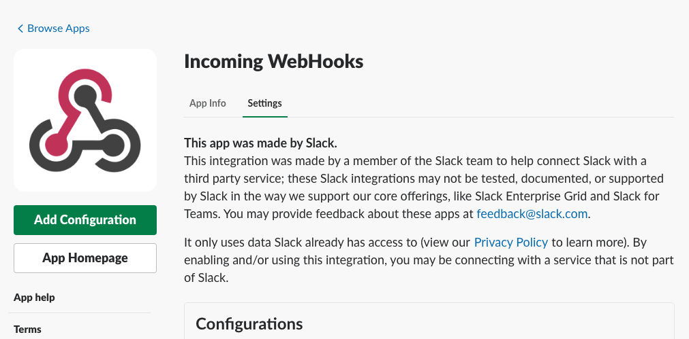
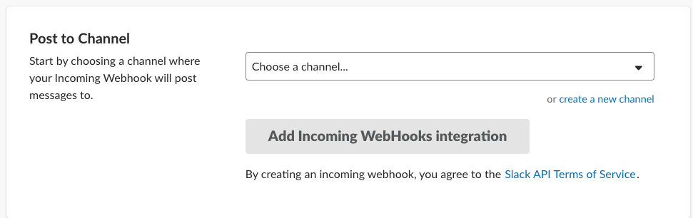

Piazza and Slack integration
Slack is very popular in the workspace. As a TA in Cloud Computing Course (15-619), we also use Slack to discuss with each other and solve student’s problem together. Piazza is another common tool we used every day. It is like a forum within the course.
When a student asks a question, we want to answer them quickly. Piazza could send you new questions in real time with email. However, in this way, we would receive a lot of new emails, which is not what we want. So I come up with a new idea, which could connect Slack and Piazza.
Slack API
There are different API we could use in Slack. One way is to put it as a bot. It could pull new posts from Piazza and send it to the channel within a fixed time interval. The easiest way to do this is to use WebHook.
Incoming Webhooks are a simple way to post messages from apps into Slack. In short, Slack will create a unique URL for you, and you need to post a JSON data to that URL. Then we could see the message in the Slack channel.
 We first search “Incoming Webhooks” in Slack App Directory, then we could see this App. Choose “Add Configuration”.

Next, we need to choose one channel to send a message to. We could create a new channel to send the message.
After clicking “Add Incoming Webhooks integration”, we could see a URL for us to send. Then we could use the following Python code snippet to send the message to Slack channel.
import requests
import json
data = {"text": "hello, world"}
header={"Content-Type":"application/json"}
requests.post(url,data=json.dumps(data),headers=header)
Piazza API
Piazza did not provide open API for us to use, but we could do reverse engineering to get the web API is used. The Python2 package could find here.
This API could help me browse the Piazza page and get the newest post id. The program I wrote will do the following thing.
- Go through all posts and skipped pinned posts. Get the maximum post id.
- Send all posts that have id smaller than it.
- Wait 1 minute
- Go through all posts again until it hit last max id. If there are new posts, sending them to Slack channel and change max id.
- Wait again.
In general, it is a pull method.
Conclusion
This is an easy tool but helped us a lot in the previous semester. TAs could discuss the question under the piazza messages in the Slack. We could also @ people to answer the question in case he did not see that.